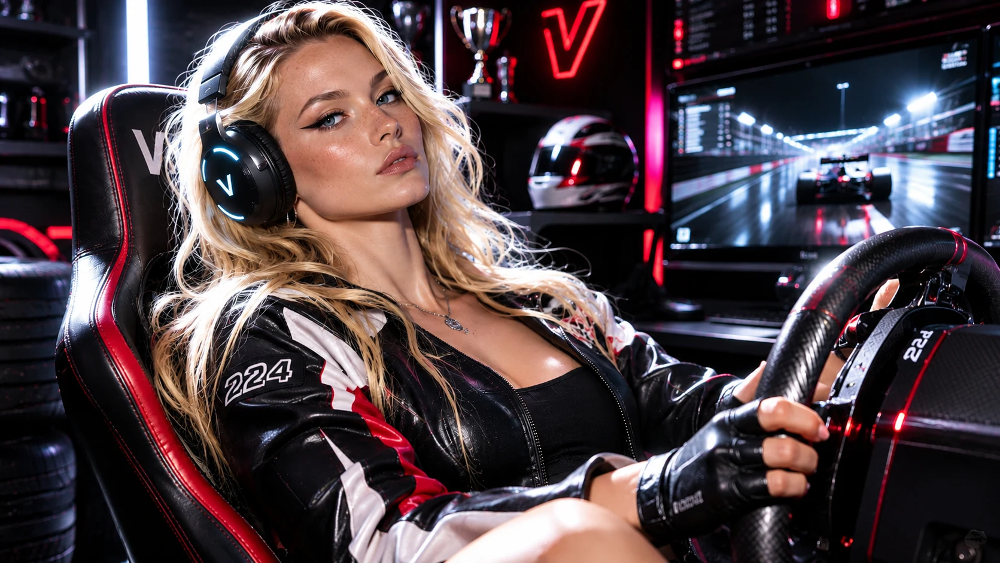
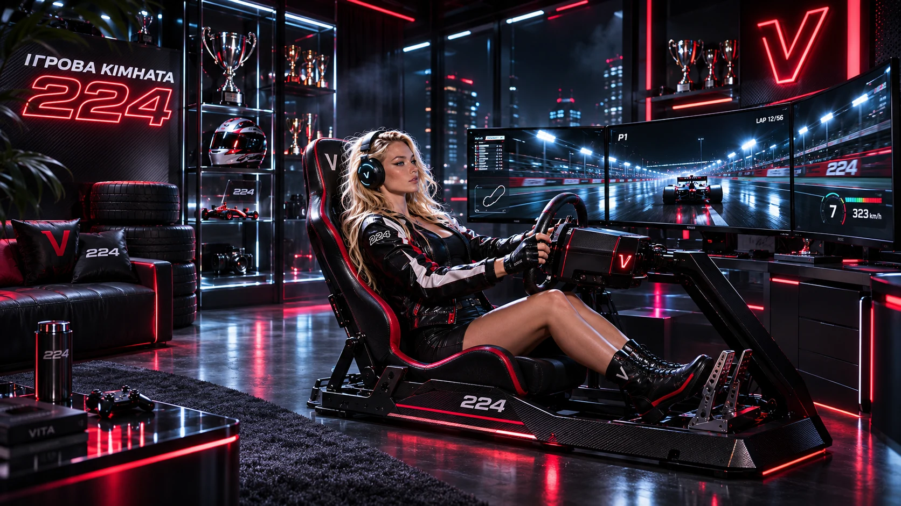
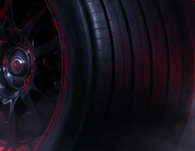

ІГРОВА
КІМНАТАТРАСА224
Не просто гра. Нічний гоночний модуль ВІТИ: карбон, телеметрія, шини, шолом, педалі, дим, три екрани й одна команда — тиснути далі.
.webp)
СИЦИЛІЯ
Місто на пагорбі.
Море в тумані.
Де народжується Траса 224.
Вхід у режим 224

RACE CORE
.webp)
Кермо
Карбон, force feedback і точність кожного руху. Усе починається з керма.
.webp)
Шолом
Чорний хром, червоне світло й особистий код 224. Готовність до старту.
.webp)
Педалі
Газ / гальмо / зчеплення. Три педалі — один ритм. Відчувати трасу до останнього повороту.
ШИНА
НЕ СТОЇТЬ.
Червона лінія відбивається в карбоні. Дим проходить по підлозі. Швидкість починається ще до старту.
.webp)
ТРАСА 224
- ДОВЖИНА
- 24,4 км
- ПОВОРОТИ
- 18
- ВИСОТА
- +760 м
- ЛОКАЦІЯ
- Сицилія
Гра закінчується на моніторі — але швидкість ні. Тут цифровий cockpit стикається з реальною нічною Сицилією: серпантини, океан, гори, міста в тумані й світло, яке ріже темряву.
Траса 224 / The Ultimate Race
«Тисни на газ! Давай!VERSE 01
Не гальмуй — гони швидше!»
«Тут немає правил,VERSE 01
немає ліміту.»
«Траса двісті двадцять чотири!CHORUS
Ми — спалахи світла у темному вирі!»
«Турбіни злітають…BRIDGE
Час застигає…
3… 2… 1…»
ВІТА / Race Session

СВІТ 224
3 · 2 · 1